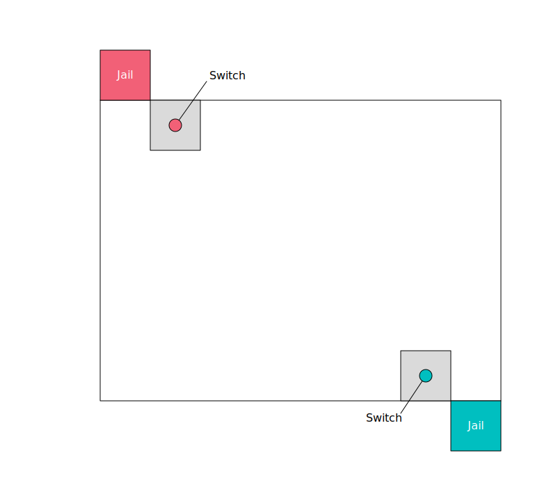

Jailbreak
Supplies
- Enough whomps to have one for each player, in two colors to designate teams.
- 2 pins for jail switches
- 16 or more field cones
- Alternatively, masking tape
- 2 dodgeballs (optional, for cavalry rules)
A whomp is a pool noodle cut in half.
We use sand-filled Awana pins, but you could also use a 2-liter bottle filled halfway with sand or water.
For dodgeballs, we use Little Tikes Mini Foam Soccer Balls. We buy them at Toys R Us for about $6 each. I have not found a good source for them online. They are 4.7” diameter coated foam, and they are perfect for dodgeball. Rhino dodgeballs also work, but they are more expensive.
Objective
The game’s objective is to capture all of the opposing team’s players.
Playing field
The playing field is fairly simple. Each team has a jail and a switch. The switch is surrounded by a perimeter 6-8 feet in diameter, marked off by cones or masking tape.
The jail should have line-of-sight to the switch.

Rules
Basic Rules
Starting
- At the start of the game all players on each team signify readiness by touching the tips of their whomps to their switch.
- When both teams are ready, the game begins via a mutual countdown
Out
- If a player is struck by an opposing team’s whomp, they are out and must immediately go to the opposing team’s jail.
- In cases of “hit at the same time”, we make the players return to their switch and and tag back in before resuming play.
- If you have a clearly marked play area that you do not want players to leave, you may optionally call players exiting the field out of bounds, at which point they are considered captured and must return to the opposing team’s jail.
The Switch
- The switch is what opens the jail cell. If the switch at any point is not upright, the jail door is open and captured players may return to their switch to tag back in to play.
- The switch is guarded by a perimeter of cones or masking tape. Players guarding the switch may not enter the perimeter, except to reset the switch and close the jail door.
- Players attempting to rescue captive teammates may enter the perimeter to knock over the switch and let their teammates out
- If a player is captured while the switch is down, they may exit the jail as long as they entered the jail prior to the switch being reset.
Cavalry Rules
This is entirely optional, and we’ve found that the team without cavalry tends to be the winner.
- One player on each team may elect to be the cavalry for their team. They exchange their whomp for a dodgeball.
- Cavalry may throw their ball at an opposing teams player.
- The ball is always live; if a non-cavalry player touches the ball at any point they go to the opposing teams jail (even if the ball was thrown by a teammate).
- Cavalry players may pick up a ball once it has struck at least one object or surface, even if it originally belonged to the opposing team
- If a cavalry player does not have possession of a ball when they are captured, they may not retrieve it prior to entering the jail.
- If you have an out-of-bounds rule in play, the cavalry must also abide by them. That is, they may go out of bounds to retrieve a ball, but they must go directly to the opposing teams jail once the ball is collected.